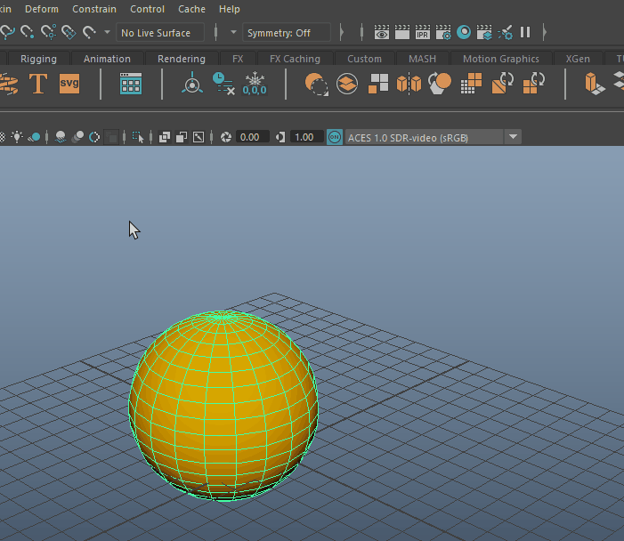
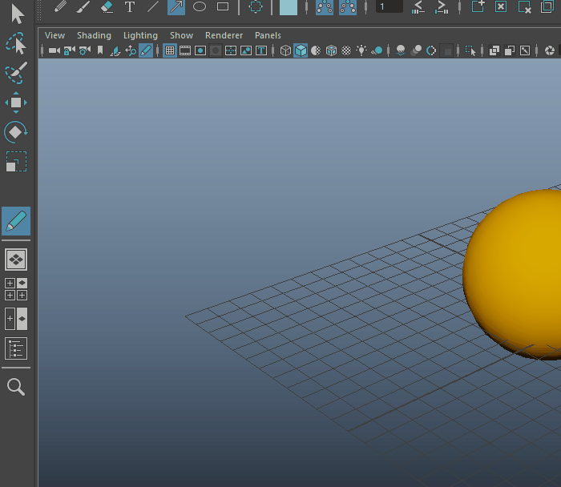
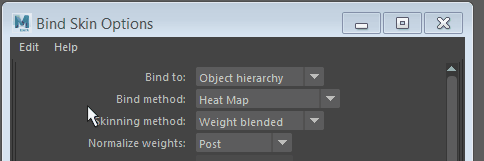
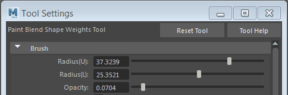

许多工具都有一些选项在菜单中显示为框  。此选项框可用于调整每个工具的各个设置。
。此选项框可用于调整每个工具的各个设置。

单击选项框以打开设置窗口。
- 单击菜单项名称旁的 框以打开该操作的选项窗口。
- 双击工具以显示工具设置(Tool Settings)面板。

双击工具箱中的“上次使用的工具”(Last Used Tool)图标以打开该工具的“工具设置”(Tool Settings)。
将工具或操作重置为其初始（“出厂”）选项
- 在选项窗口中，选择“编辑 > 重置设置”(Edit > Reset settings)。

- 在“工具设置”(Tool Settings)编辑器中，单击“重置工具”(Reset Tool)。

可以通过单击“重置”(Reset)将菜单项恢复为其默认设置。
执行下列操作之一：